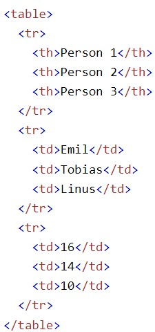

Que Es Una Tabla? Una tabla es un conjunto estructurado de datos distribuidos en filas y columnas (datos tabulados). Una tabla permite buscar con rapidez y facilidad valores entre diferentes tipos de datos que indiquen algún tipo de conexión. Por ejemplo, una persona y su edad, o un día de la semana o el horario de una piscina municipal.

El aspecto básico de una tabla es que es un elemento rígido. Es fácil interpretar la información haciendo asociaciones visuales entre los encabezados de las filas y las columnas. Por ejemplo, observa la tabla siguiente y busca un gigante de gas joviano con 62 lunas. Puedes encontrar la respuesta asociando los encabezados de la fila y la columna correspondientes.

| Person 1 | Person 2 | Person 3 |
|---|---|---|
| Emil | Tobias | Linus |
| 16 | 14 | 10 |